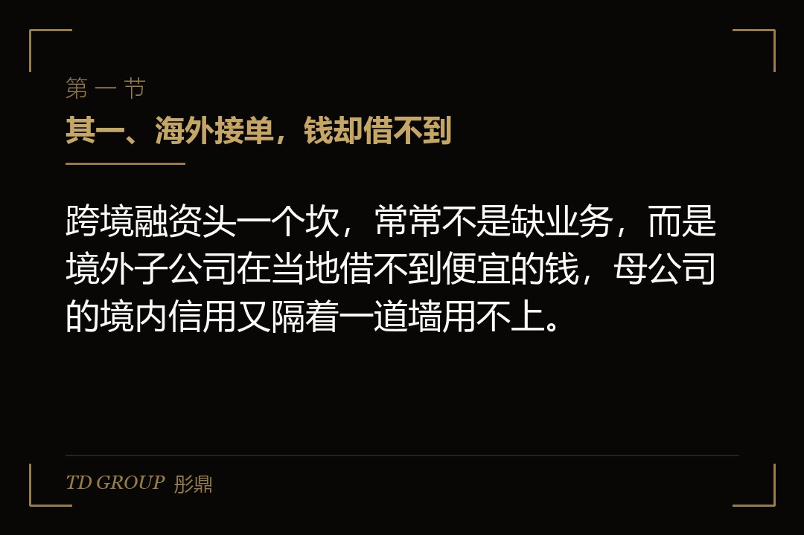
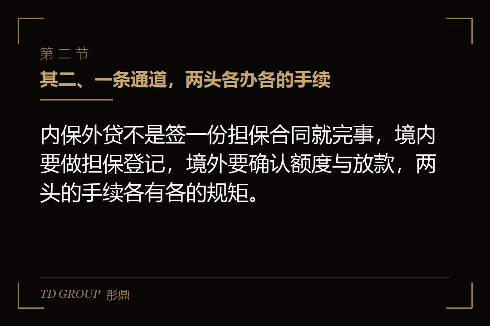
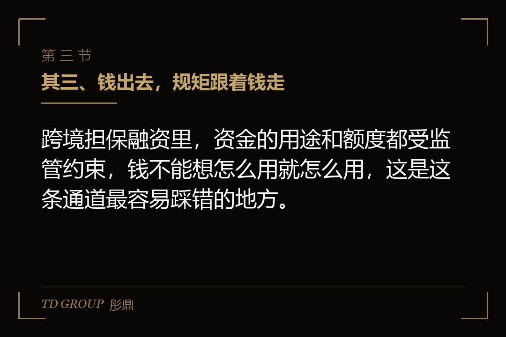

其一、海外接单，钱却借不到

结论先行：跨境融资头一个坎，常常不是缺业务，而是境外子公司在当地借不到便宜的钱，母公司的境内信用又隔着一道墙用不上。
假设有家做消费电子的企业，海外订单越来越多，就在东南亚设了一家子公司，负责当地的组装和交付。子公司接单很顺，问题是接单要先垫资，采购原材料、发工资、付房租都要钱，而它在当地成立时间短、没有经营历史，当地银行给的授信要么没有、要么利率高得离谱。
母公司这边信用很好，在境内银行有充足的授信额度，恨不得直接把这笔授信借给子公司用。但钱和信用都不能凭空跨境——境内银行的授信，不能直接让境外的子公司去提款，两边隔着一套跨境资金和担保的监管框架。
这就是内保外贷要解决的问题：把境内母公司的信用，通过一个担保安排，变成境外子公司能用的钱。母公司不直接汇钱出去，而是给境外子公司做担保，让境外的银行放心放款。
这里要先分清一件事：内保外贷解决的是「信用」的跨境，不是「资金」的跨境。母公司没有把钱打到境外去，它只是把自己的信用借给子公司用。资金本身是境外银行在境外放出来的。这一层区别很重要，它决定了后面要办的到底是哪几道手续，也决定了风险最后从哪里传导回来。
其二、一条通道，两头各办各的手续

结论先行：内保外贷不是签一份担保合同就完事，境内要做担保登记，境外要确认额度与放款，两头的手续各有各的规矩。
把内保外贷的典型流程走一遍。步骤一，境内的母公司向境内银行申请，愿意为境外的子公司提供担保；步骤二，境内银行就这笔担保办理相关的登记或备案手续，把担保关系落进监管视野；步骤三，境外的银行收到担保后，向境外的子公司放款；步骤四，子公司用这笔钱去经营，到期连本带息还给境外银行；如果它还不上，境内母公司就要替它还。
这条通道里，境内这一头最关键的是担保登记。担保不是私下签个合同就有效，必须按规则完成登记，登记既是对外的公示，也是后续发生争议时主张权利的依据。境外那一头，则要看放款银行对担保的认可程度、额度怎么批、利率怎么定。
打个比方，这像一封跨国的担保函。境内母公司写一张「它还不上的话我来还」的承诺，境外银行拿到这张承诺才肯借钱。承诺能不能兑现，取决于境内那头的登记是不是齐全、有效，也取决于境外那头认不认这张函。
两头手续里，最容易被人低估的是境内这一头的登记。有人觉得担保是母公司和银行之间的事，私下一签就算数；但跨境担保恰恰因为它跨了境，才必须把关系落进监管能看得到的体系里。登记不全，将来子公司真还不上，境内银行或母公司想去主张、去追偿，都会先卡在这一步。
其三、钱出去，规矩跟着钱走

结论先行：跨境担保融资里，资金的用途和额度都受监管约束，钱不能想怎么用就怎么用，这是这条通道最容易踩错的地方。
内保外贷借出去的钱，用途是有边界的。一般来说，这笔钱要用于境外借款人的正常经营，比如采购、运营、流动资金，不能随便挪作他用，更不能借着担保的名义，把境内的钱变相转出去、绕过正常的跨境资金管理。
这里要特别拎出来说的一点是：内保外贷的初衷，是支持企业真实的境外经营，而不是给资金跨境流动开一道后门。监管看得最紧的，恰恰是「借担保之名、行资金出境之实」这一类安排。所以钱的真实去向，将来是要经得起查的；说不清用途，再正规的担保也会被重新审视。
额度也是一个要盯的指标。跨境担保涉及的外债额度、担保额度，都有各自的限额和口径，超了额度，通道就办不下去。企业要提前算清楚，这次担保在不在额度以内，别等到手续办到一半才发现额度不够。
这里最容易出问题的是资金用途。有些企业觉得担保出去了、钱也借到了，怎么花是自己的事，结果在后续核查里说不清资金的真实流向，轻则补手续，重则影响后续所有的跨境融资安排。
其四、担保出去，风险也跟着回来
结论先行：内保外贷最大的风险，是它把境外的经营风险，通过担保这根绳子，一路拽回了境内母公司的资产负债表。
这是内保外贷和普通境内担保最本质的区别。境内担保，出问题的时候你是在境内、用境内的法律和资产去解决；跨境担保，一旦境外的子公司经营恶化、还不上钱，境外银行会先找子公司，找不到就回过头来找境内这个担保人。
所以境内的母公司，等于替境外的子公司扛下了一部分经营风险。子公司那边一个行业波动、一个当地政策变化、一个经营失误，都可能变成境内母公司的一笔实实在在的担保损失。母公司签字的那一刻，其实是在用自己的信用和资产，为境外的经营风险做背书。
换句话说，内保外贷把原本隔着一道境、看不见的风险，用一纸担保给拉近了。境内母公司平日里感觉不到境外子公司的经营好坏，但担保一生效，两边就绑在了一起：子公司赚的钱，母公司不一定分得到；子公司亏的钱，母公司却可能要先垫上。这种「收益不共享、风险先共担」的不对称，正是签字前最要想清楚的地方。
更要命的是，这种风险的传导往往是滞后的。子公司刚拿到钱的时候一切正常，母公司也感觉不到压力；等真正出问题、担保被触发的时候，往往已经过去一两年，母公司的经营环境可能也变了，这时候再被动用资产，损失比预想的更大。
其五、汇率和时点，两件容易被略过的事
结论先行：跨境担保融资里，汇率波动和担保期限错配是两件容易在签字时被略过、真出了事才想起来的事，都得提前打算。
其一是汇率。内保外贷的放款和还款，币种可能不一样，境外借的可能是外币，境内担保用的可能是人民币资产。一旦汇率大幅波动，担保责任折算回境内时，金额就会跟着放大或缩小。企业要是没有做汇率上的准备，一个看似稳定的担保，可能在某个汇率关口突然变得压力很大。
其二是期限错配。境外子公司的贷款期限，和境内母公司的担保期限，如果没对齐，就会出现一个担保空档。比如境外贷款是三年，境内担保只办了一年，第二年担保到期了，境外银行会要求重新办担保，这时候母公司的信用和额度未必还在原地。
这两件事都不复杂，但都发生在签字那一刻之后。所以签之前，就要把汇率怎么管、期限怎么配想清楚，而不是等出事再去补救。
其六、动手之前，先核清四件事
结论先行：要不要走内保外贷，先把登记能否办、额度够不够、用途合不合规、风险扛不扛得住这四件事核清，比急着签担保合同更重要。
其一，核登记。境内担保登记能不能办、要办到哪一级、周期多长，先问清楚，别让登记卡在半路，等境外那边等着放款了才发现手续没走通。
其二，核额度。外债额度、担保额度还剩多少，这次担保占不占额度、占掉多少，都要提前算明白，别办到一半才发现额度不够。
其三，核用途。这笔钱的真实用途是不是在合规边界内，将来能不能把资金流向讲得清清楚楚，别留下说不清的尾巴。
其四，核风险。境外子公司的经营确定性有多高，担保触发时境内母公司的资产和信用扛不扛得住，汇率和期限这两件事有没有预案，都要提前想清楚。
这四件事核清了，内保外贷才是把境内信用送出境外的正道；没核清就签，它可能只是把境外的风险，提前搬到了境内的账上。
本文为知识梳理，不构成专业意见。具体的担保登记、额度口径、资金用途与汇率安排，以监管机构现行正式规则与交易各方协议为准，建议由律师与财务顾问共同核过之后再签。